Jesús Martínez
Data Analyst
Hola! Soy un joven apasionado por el mundo de los datos.
Me inspira crear soluciones para fortalecer la cultura data-driven y la optimización estratégica de procesos.


Desarrolla y automatiza procesos de recolección de datos.
Analiza tus datos para obtener insights en tus procesos internos.
Desarrolla soluciones que impacten positivamente en tu organización.